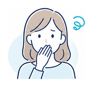
歯並びを見られるのが気になる
写真や会話のとき、口元を隠してしまうことがある。
未来のわたしに、自然な笑顔を。
見た目の自然さだけでなく、噛み合わせや治療後の安定まで考える矯正相談。 はじめての方にも、費用や期間の目安を丁寧にお伝えします。
※料金・症例は架空サンプルです。実際の治療内容は診断により異なります。
矯正を始めたい気持ちはあっても、見た目や費用、通院の不安で迷う方は少なくありません。

写真や会話のとき、口元を隠してしまうことがある。
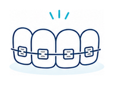
仕事や学校で装置が見えることに抵抗がある。
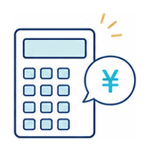
総額や追加費用、どのくらい通うのかを先に知りたい。
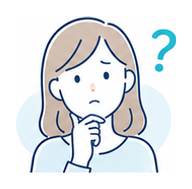
マウスピース矯正が自分の歯並びに向いているか確認したい。
マウスピース矯正は手軽に見えますが、歯の動き方や噛み合わせ、通院中のサポートまで見据えた治療計画が大切です。 MIRAI ALIGN DENTALでは、見た目の希望とお口全体の状態を確認しながら、無理のない選択肢をご提案します。
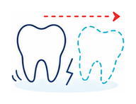
前歯だけを整えても、噛み合わせや奥歯のバランスに課題が残る場合があります。
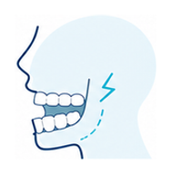
歯を動かす方向や量が合わないと、顎や歯への負担につながることがあります。
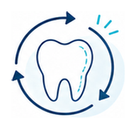
診断や保定が不十分な場合、後戻りや追加治療が必要になることもあります。
当院では「見た目」だけでなく「噛み合わせ」まで考えた矯正治療をご提案します。
透明で目立ちにくいだけではなく、検査・診断・シミュレーションで納得感のある治療開始を目指します。
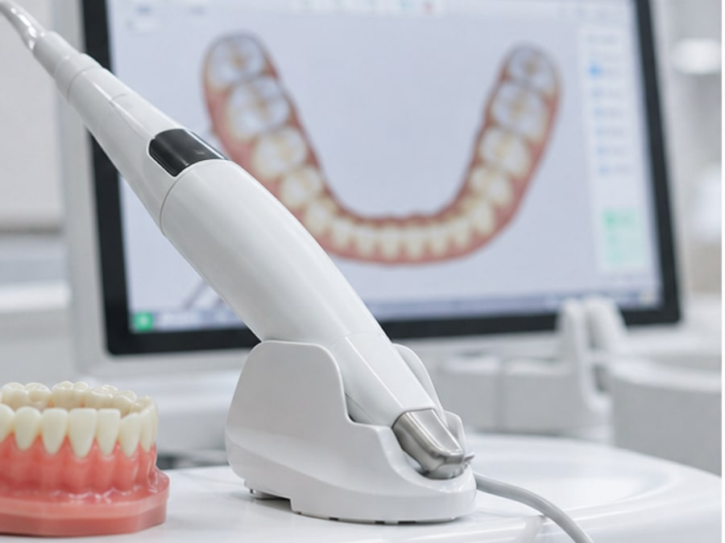
口腔内スキャナーで歯並びや噛み合わせを立体的に確認します。
希望だけでなく、治療可否や注意点も含めて丁寧にお伝えします。
見た目と機能の両方を見ながら、一人ひとりに合わせて計画します。
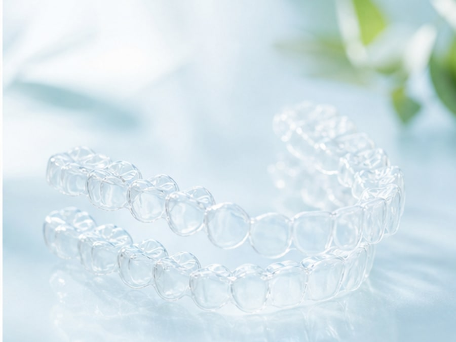
治療期間や歯の動きの目安を、相談時にわかりやすくご説明します。
掲載している症例はポートフォリオ用の架空サンプルです。実際の治療結果には個人差があります。
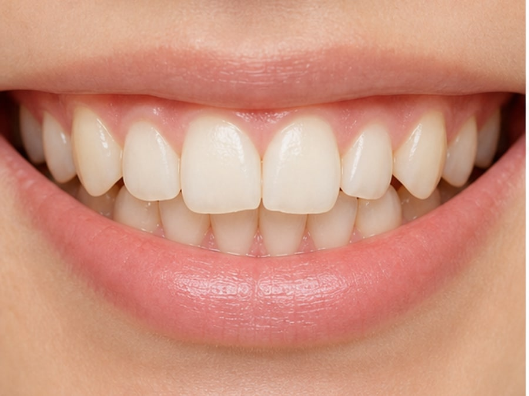
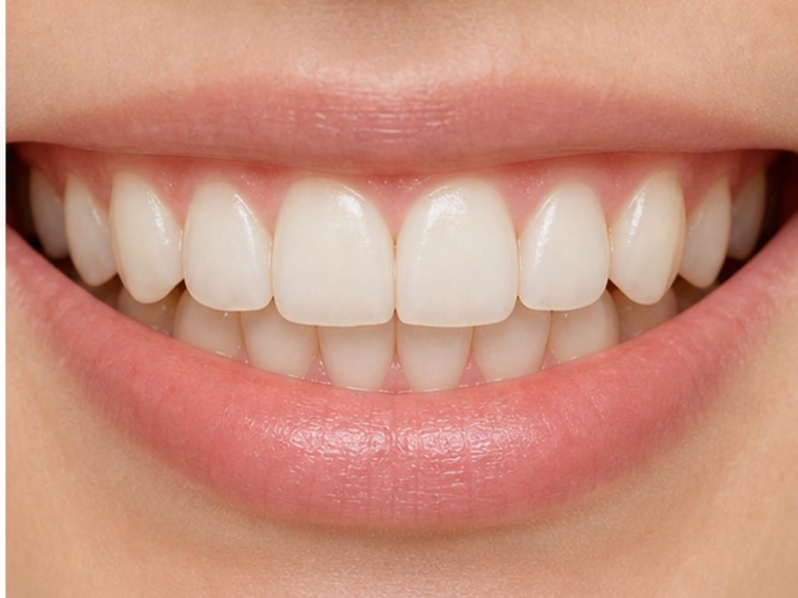
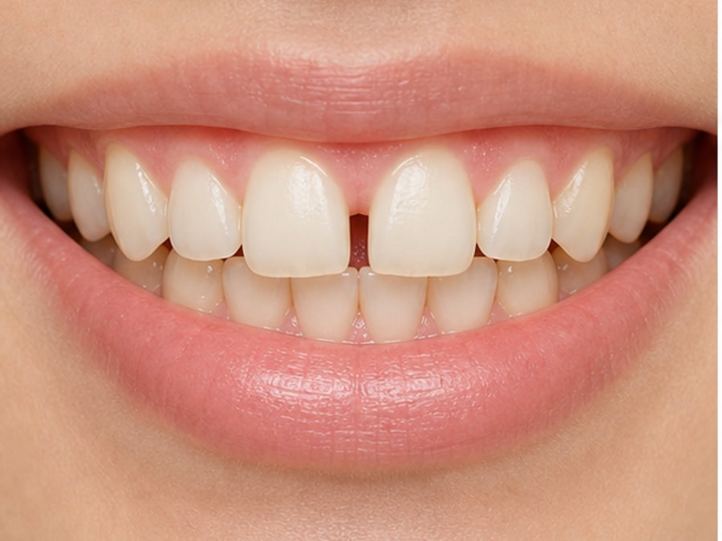
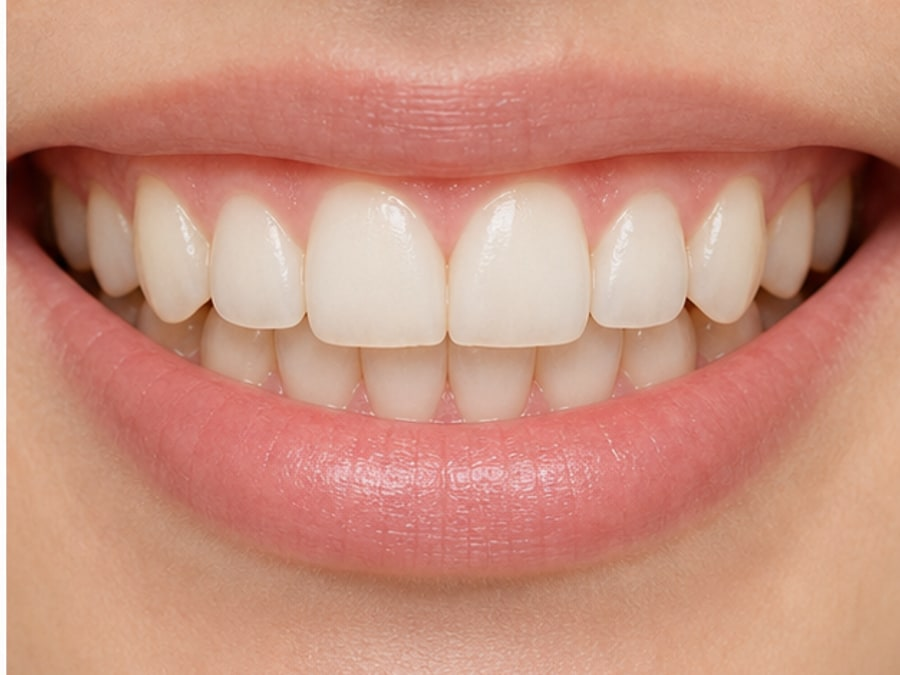
※症例は架空サンプルです。効果には個人差があり、歯根吸収・歯肉退縮・虫歯・歯周病・後戻りなどのリスクがあります。
月々のお支払い目安と総額を併記し、相談前でも費用感を把握しやすくしています。
前歯の軽度なズレを整えたい方へ
月々16,500円〜
総額 330,000円〜
見た目と噛み合わせを一緒に見たい方へ
月々24,200円〜
総額 550,000円〜
歯並び全体をしっかり整えたい方へ
月々28,600円〜
総額 770,000円〜
※分割払いには審査があります。料金は架空サンプルであり、治療内容により異なります。
相談から治療開始までの流れをわかりやすく。無理に当日決定していただく必要はありません。
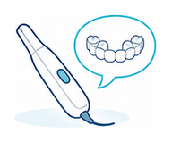
歯並びのお悩みやご希望をヒアリングします。
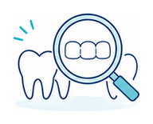
スキャンや写真撮影でお口の状態を確認します。
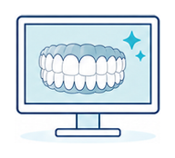
治療後のイメージと期間・費用の目安をご説明します。
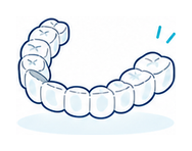
マウスピースを作製し、装着方法をご案内します。
1〜2ヶ月に1回程度、進み具合を確認します。
院長 青葉 未来（架空プロフィール）
矯正治療は、見た目の変化だけでなく、毎日の食事や会話、治療後の安定にも関わります。 MIRAI ALIGN DENTALでは、患者さまの生活スタイルや不安に寄り添いながら、必要な検査と説明を丁寧に行うことを大切にしています。
「始めるかどうかを決める前に、まず自分の状態を知りたい」そんな段階でもご相談ください。 治療のメリットだけでなく、適応できないケースや注意点も含めてお伝えします。
相談前に気になりやすい内容をまとめました。
装着開始直後や交換時に締め付け感を覚えることがあります。多くの場合は数日で慣れますが、痛みが強い場合はご相談ください。
歯並びの状態によって異なります。軽度の場合は数ヶ月、全体矯正では1年前後以上かかることもあります。
食事中はマウスピースを外していただきます。装着前には歯磨きを行い、清潔な状態で戻すことが大切です。
状態によります。抜歯が必要な可能性がある場合は、理由や代替案も含めて診断時にご説明します。
矯正後は保定装置の使用が重要です。使用状況によっては後戻りする可能性があるため、治療後の管理もご案内します。
歯並びや噛み合わせの状態によっては、マウスピース矯正以外の治療が適している場合があります。